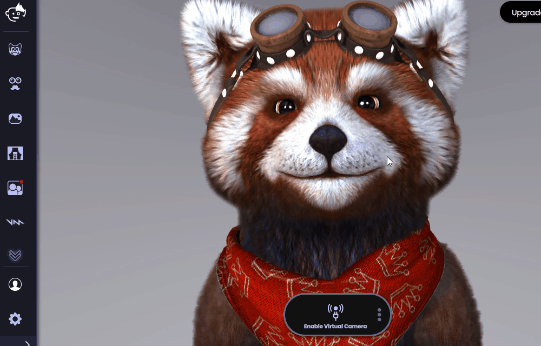
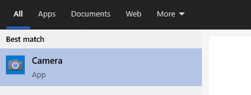
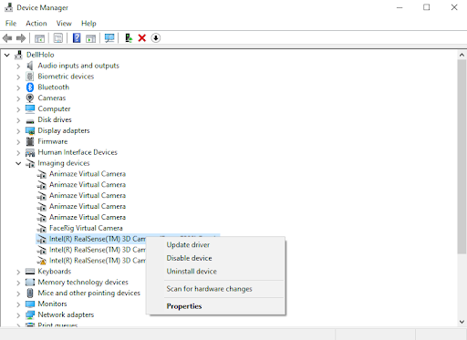

Animaze Desktop: Why does my camera feed look black?
If your user feed looks black, that means that the camera is sending Animaze black frames.
1. Try changing the camera's resolution in Animaze > Settings > Webcam :

2. Make sure the camera is working in the Windows app (press Windows key, type Camera App and see if there’s a camera feed):

3. Make sure your camera's drivers are up to date:

4. A workaround for this problem is SplitCam, a 3rd party app that lets you feed your camera through it and then use the app as an input source:
4.1. Download SplitCam and install it (it is free).
4.2. Create a scene in SplitCam and click on the Media Layers “+” sign.
4.3. Click on Web Camera.
4.4. Select your web-camera and click on “Add camera”.
4.5. Go to Animaze and from the drop-down list above the camera feed select SplitCam Video Driver.